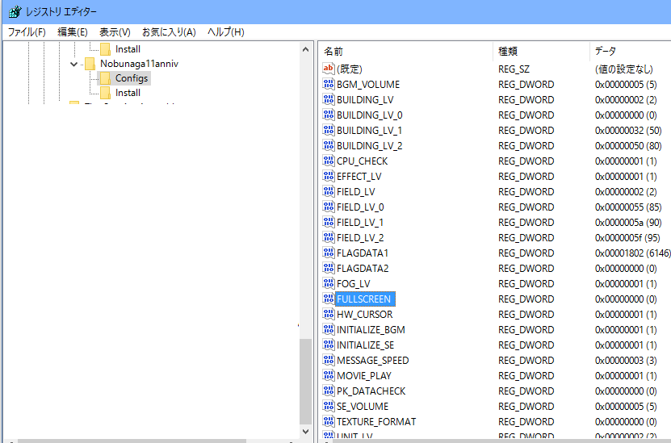

この問題は、Windows8 あたりから発生しているものです。
Direct X のバージョンが新しいと発生します。
天下創世をWindowsモードで起動することでこのちらつきを解消することが出来ます。
レジストリエディタ(regedit)で
HEKY_CURRENT_USER\Software\KOEI\Nobunaga11\Config\FULLSCREEN
の値を0に設定し、ウィンドウモードでプレイしてください。
30周年記念版の場合は、場所が異なります。
HEKY_CURRENT_USER\Software\TecmoKoei\Nobunaga11anniv\Config\FULLSCREEN
という項目を(右クリックの新規でDWORD 32ビット値で)作成し、値を0に設定し、ウィンドウモードでプレイしてください。
